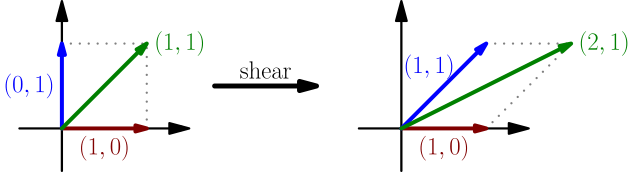

Matrix-vector multiplication¶
Let $f$ be a linear function with 2D vectors as inputs. Previously we noticed that the whole function is completely defined by $\red{f(1,0)}$ and $\blue{f(0,1)}$; if you know what those are, you can calculate $f(x,y)=x\red{f(1,0)}+y\blue{f(0,1)}$ with any $x$ and $y$. We will now introduce some notation to make this easier.
Matrices as a way to write a linear function¶
It is common to write the vectors $\red{f(1,0)}$ and $\blue{f(0,1)}$ into a matrix so that $\red{f(1,0)}$ is the first column and $\blue{f(0,1)}$ is the second column. For example, for $\red{f(1,0) = (2,3)}$ and $\blue{f(0,1) = (4,5)}$, the matrix would be $$ \begin{bmatrix} \red2&\blue4 \\ \red3&\blue5 \end{bmatrix}. $$ A matrix is just a grid of numbers. It doesn't have to be the same size in both directions. For example, if $f$ takes 3D inputs and produces 2D outputs, so that $\red{f(1,0,0)=(2,3)}$, $\blue{f(0,1,0)=(4,5)}$ and $\green{f(0,0,1)=(6,7)}$, the matrix would be $$ \begin{bmatrix} \red2&\blue4&\green6 \\ \red3&\blue5&\green7 \end{bmatrix}. $$
The matrix of a linear function $f$ is a matrix whose columns are $f(1,0,0,\dots,0)$, $f(0,1,0,\dots,0)$, $\dots$, $f(0,0,\dots,0,1)$, written vertically.
A matrix with 2 rows and 3 columns is also called a $2 \times 3$ matrix. Note that the number of rows goes first, even though usually $x$ goes before $y$. To prevent this confusion, in these derivations I tend to say something like "width 3 and height 2" instead of "$2 \times 3$ matrix".
Examples:
- Any rotation around the origin is a linear function. With 90 degrees counter-clockwise, $(1,0)$ rotates to $\red{(0,1)}$ and $(0,1)$ rotates to $\blue{(-1,0)}$, so the matrix $$ \begin{bmatrix} \red 0 & \blue{-1} \\ \red{1} & \blue 0 \end{bmatrix} $$ represents a rotation by 90 degrees counter-clockwise.
- Rotating $(1,0)$ counter-clockwise by any angle $\theta$ gives $\red{(\cos(\theta),\sin(\theta))}$, and rotating $(0,1)$ gives $\blue{(-\sin(\theta),\cos(\theta))}$. This was explained in the previous derivation. The matrix representing the rotation is $$ \begin{bmatrix} \red{\cos(\theta)} & \blue {-\sin(\theta)} \\ \red{\sin(\theta)} & \blue{\cos(\theta)} \end{bmatrix}. $$ This is called a rotation matrix. If you plug in $\theta=90^\circ$, you should get the same matrix as above.
-
The matrix
$$
\begin{bmatrix} \red 1 & \blue{1} \\ \red{0} & \blue 1 \end{bmatrix}
$$
corresponds with a linear function $f$ for which $f(1,0)=(1,0)$ unchanged,
but $f(0,1)=(1,1)$ is more to the right than $(0,1)$ was originally,
like with italic text.
This linear function is called a shear.
For a better visualization of the shear, see this 3blue1brown video starting at 8:30. In general, 3blue1brown's linear algebra videos are really good and you should watch them.
- The function $f(x,y)=(x,y)$ (i.e. do nothing) is a linear function. Because $\red{f(1,0)=(1,0)}$ and $\blue{f(0,1)=(0,1)}$, its matrix is $$ I = \begin{bmatrix} \red 1 & \blue 0 \\ \red 0 & \blue 1 \end{bmatrix}. $$ This matrix is called the identity matrix, and the "do nothing" function is correspondingly called the identity function. This also works with any other dimension instead of 2. For example, the $4 \times 4$ identity matrix is $$ I = \begin{bmatrix} 1&0&0&0 \\ 0&1&0&0 \\ 0&0&1&0 \\ 0&0&0&1 \end{bmatrix}. $$ In linear algebra, the letter $I$ can mean an identity matrix of any size, and the size should be clear from how $I$ is used.
- The zero matrix $$ O = \begin{bmatrix} 0&0 \\ 0&0 \end{bmatrix} $$ corresponds with a linear function that always outputs a zero vector. As with $I$, the letter $O$ can refer to a zero matrix of any size.
Introducing matrix-vector multiplication¶
In this context, instead of writing vectors like $(10,20)$, they are usually written like $$ \begin{bmatrix}10\\20\end{bmatrix}. $$ Writing a matrix and a vector next to each other, e.g. $$ \begin{bmatrix}2&4 \\ 3&5 \end{bmatrix}\begin{bmatrix}10\\20\end{bmatrix} $$ means $f(\text{the vector})$, where $f$ is the linear function corresponding to the matrix. For example, with a 2D linear function $f$, we have $f(x,y)=x\red{f(1,0)}+y\blue{f(0,1)}$, so if $\red{f(1,0)=(2,3)}$ and $\blue{f(0,1)=(4,5)}$, we get $$ \begin{align} f({10},{20})&={10}\red{f(1,0)}+{20}\blue{f(0,1)} \\ = \begin{bmatrix} \red2 & \blue4 \\ \red3 & \blue5 \end{bmatrix} \begin{bmatrix} {10} \\ {20} \end{bmatrix} &= {10}\red{\begin{bmatrix} 2 \\ 3 \end{bmatrix}} + {20}\blue{\begin{bmatrix}4 \\ 5 \end{bmatrix}} =\begin{bmatrix} 20+80 \\ 30+100 \end{bmatrix} = \begin{bmatrix} 100 \\ 130 \end{bmatrix}. \end{align} $$
Multiplying a matrix and a vector means creating a linear combination of the columns of the matrix with numbers from the vector as coefficients. This calculates $f(\text{the vector})$, where $f$ is the linear function corresponding to the matrix.
I will later explain why this operation is called multiplying.
Examples:
- To rotate the vector $(2,1)$ counter-clockwise 90 degrees, you can calculate $$ \begin{bmatrix} \red 0 & \blue{-1} \\ \red{1} & \blue 0 \end{bmatrix} \begin{bmatrix} 2 \\ 1 \end{bmatrix} = 2\red{\begin{bmatrix}0\\1\end{bmatrix}}+1\blue{\begin{bmatrix}-1\\0\end{bmatrix}} = \begin{bmatrix}-1\\2\end{bmatrix}. $$ This is the same result we got here.
- To rotate $(2,1)$ counter-clockwise by any angle $\theta$, we can now calculate $$ \begin{bmatrix} \red{\cos(\theta)} & \blue {-\sin(\theta)} \\ \red{\sin(\theta)} & \blue{\cos(\theta)} \end{bmatrix} \begin{bmatrix}2\\1\end{bmatrix} = 2\red{\begin{bmatrix}\cos(\theta)\\ \sin(\theta)\end{bmatrix}}+1\blue{\begin{bmatrix}-\sin(\theta)\\ \cos(\theta)\end{bmatrix}} = \begin{bmatrix}2\cos(\theta)-\sin(\theta)\\ 2\sin(\theta)+\cos(\theta)\end{bmatrix}. $$ This would be difficult to do without linear algebra, but this way it's easy.
-
Applying the shear to $(1,1)$ gives
$$
\begin{bmatrix} \red 1 & \blue{1} \\ \red{0} & \blue 1 \end{bmatrix}
\begin{bmatrix} 1 \\ 1 \end{bmatrix}
= 1\red{\begin{bmatrix}1\\0\end{bmatrix}} + 1\blue{\begin{bmatrix}1\\1\end{bmatrix}}
= \begin{bmatrix}2\\1\end{bmatrix}.
$$

- Multiplying a vector by the identity matrix $I$ does nothing: $$ \begin{bmatrix} \red 1 & \blue 0 & \green 0 \\ \red 0 & \blue 1 & \green 0 \\ \red 0 & \blue 0 & \green 1 \end{bmatrix} \begin{bmatrix} 1 \\ 2 \\ 3 \end{bmatrix} = 1\red{\begin{bmatrix}1\\0\\0\end{bmatrix}} + 2\blue{\begin{bmatrix}0\\1\\0\end{bmatrix}} + 3\green{\begin{bmatrix}0\\0\\1\end{bmatrix}} = \begin{bmatrix}1\\2\\3\end{bmatrix} $$
- Multiplying a vector by the zero matrix $O$ always results in the zero vector: $$ \begin{bmatrix} \red 0 & \blue 0 & \green 0 \\ \red 0 & \blue 0 & \green 0 \\ \red 0 & \blue 0 & \green 0 \end{bmatrix} \begin{bmatrix} 1 \\ 2 \\ 3 \end{bmatrix} = 1\red{\begin{bmatrix}0\\0\\0\end{bmatrix}} + 2\blue{\begin{bmatrix}0\\0\\0\end{bmatrix}} + 3\green{\begin{bmatrix}0\\0\\0\end{bmatrix}} = \begin{bmatrix}0\\0\\0\end{bmatrix} $$
Input and output dimensions¶
Because the numbers in the input vector correspond with the columns of the matrix, there must be the same number of columns as there are numbers in the vector. For example, this matrix-vector multiplication is undefined, because the vector contains 2 numbers but the matrix has 3 columns: $$ \begin{bmatrix} \red1&\blue3&\green5 \\ \red2&\blue4&\green6 \end{bmatrix} \begin{bmatrix} 7 \\ 8 \end{bmatrix} = 7\red{\begin{bmatrix}1 \\ 2\end{bmatrix}} + 8\blue{\begin{bmatrix}3 \\ 4\end{bmatrix}} + \text{???}\green{\begin{bmatrix}5 \\ 6\end{bmatrix}} $$ Here's a matrix-vector multiplication that actually works: $$ \begin{bmatrix} \red1&\blue3&\green5 \\ \red2&\blue4&\green6 \end{bmatrix} \begin{bmatrix} 7\\8\\9 \end{bmatrix} = 7\red{\begin{bmatrix}1 \\ 2\end{bmatrix}} + 8\blue{\begin{bmatrix}3 \\ 4\end{bmatrix}} + 9\green{\begin{bmatrix}5 \\ 6\end{bmatrix}} = \begin{bmatrix}76 \\ 100\end{bmatrix} $$ Here the width of the matrix is 3 and the height is 2. It can be multiplied with 3D vectors, and the result is a 2D vector. This works in general.
The width of a matrix is the dimension of its input vectors. The height of a matrix is the dimension of its output vectors.